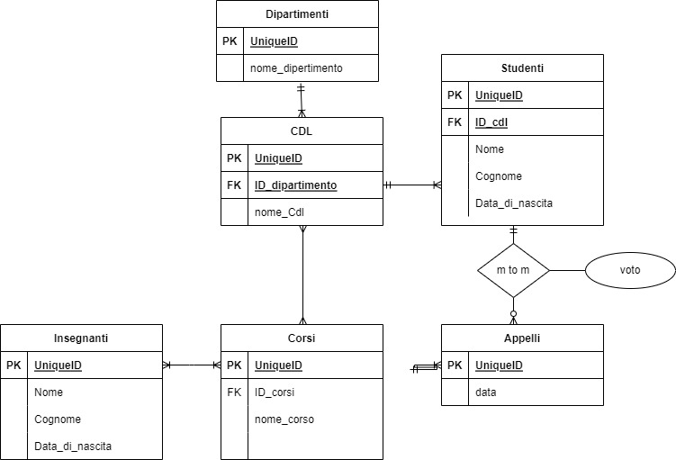

DB University 4 Boolean

Esercizio SELECT QUERY
-
Selezionare tutti gli studenti nati nel 1990 (160)
SELECT *
FROM `students`
WHERE `date_of_birth` LIKE "1990%"
-
Selezionare tutti i corsi che valgono più di 10 crediti (479)
SELECT *
FROM `courses`
WHERE `cfu`>10
-
Selezionare tutti gli studenti che hanno più di 30 anni
SELECT *
FROM `students`
WHERE `date_of_birth`< CURRENT_DATE() - INTERVAL 30 YEAR
-
Selezionare tutti i corsi del primo semestre del primo anno di un qualsiasi corso di
laurea (286)
SELECT *
FROM `courses`
WHERE `period` LIKE "I semestre"
AND `year` LIKE "1"
-
Selezionare tutti gli appelli d'esame che avvengono nel pomeriggio (dopo le 14) del
20/06/2020 (21)
SELECT *
FROM `exams`
WHERE `date`LIKE "2020-06-20"
AND `hour`>= "14:00:00"
-
Selezionare tutti i corsi di laurea magistrale (38)
SELECT *
FROM `degrees`
WHERE `level`LIKE "magistrale"
-
Da quanti dipartimenti è composta l'università? (12)
SELECT COUNT(`id`)
FROM `departments`
WHERE 1
-
Quanti sono gli insegnanti che non hanno un numero di telefono? (50)
SELECT *
FROM `teachers`
WHERE `phone` IS NOT NULL